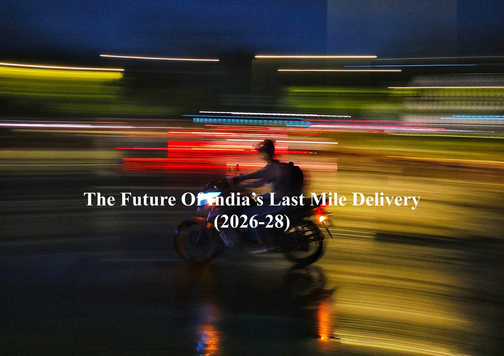
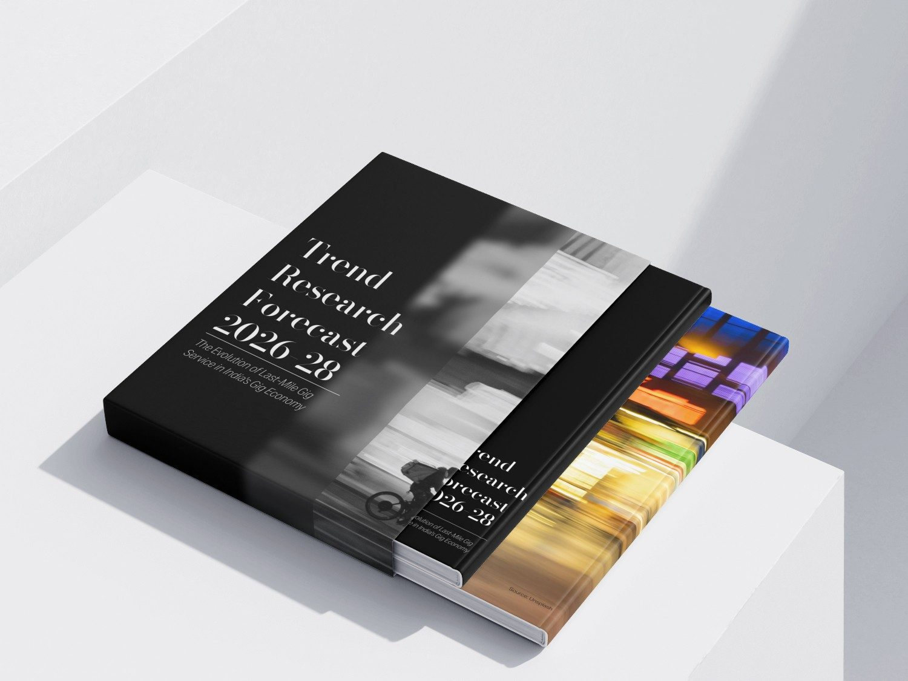
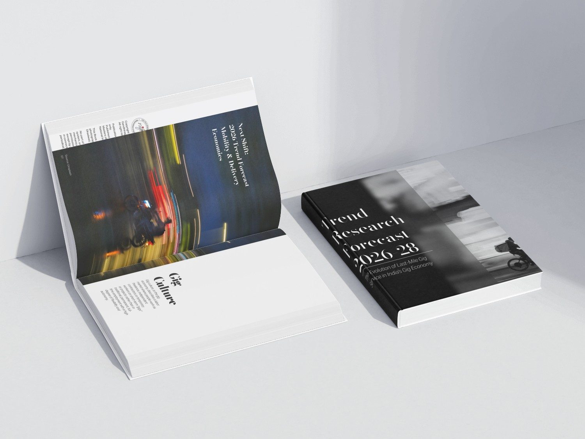
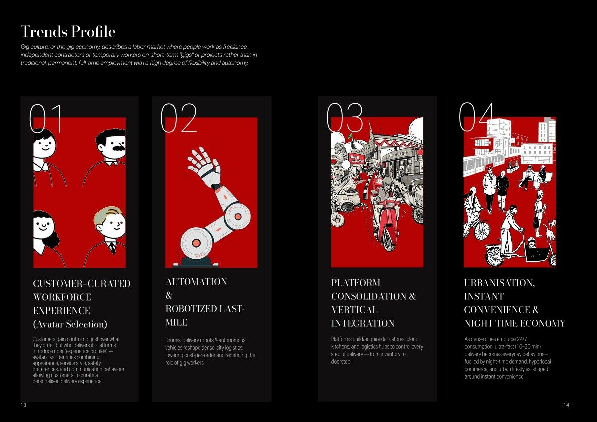

(Scroll for more)
Focus is India's last-mile gig economy
Horizon is 2026 – 2028
Output is Trend forecast book
Trend research into the future of India's last-mile delivery, published as the book Trend Research Forecast 2026–28: The Evolution of Last-Mile Gig Service in India's Gig Economy.
Methods: Trend research, forecasting, editorial & book design



(01)Context
Gig culture describes a labour market where people work as freelancers, independent contractors or temporary workers on short-term "gigs" rather than in permanent, full-time jobs, with a high degree of flexibility and autonomy. In India's cities, last-mile delivery riders have become its most visible face.
(02)The question
How will last-mile gig service evolve between 2026 and 2028, and what does that mean for the people who do the work, the platforms that employ them and the customers they serve?
(03)The forecast
The research converged on four trends:
- Customer-curated workforce experience (avatar selection): customers choose not just what they order but who delivers it, through rider "experience profiles" that combine appearance, service style, safety preferences and communication behaviour.
- Automation & robotised last mile: drones, delivery robots and autonomous vehicles reshape dense-city logistics, lowering cost per order and redefining the role of gig workers.
- Platform consolidation & vertical integration: platforms build or acquire dark stores, cloud kitchens and logistics hubs to control every step from inventory to doorstep.
- Urbanisation, instant convenience & the night-time economy: as dense cities embrace 24/7 consumption, 10–20 minute delivery becomes everyday behaviour, fuelled by night-time demand and hyperlocal commerce.
(04)The book
The forecast is published as a designed trend book, with a monochrome cover cut through by the motion blur of a rider at night, and a red-and-black editorial system with illustrated trend profiles that keep each shift easy to read and compare.